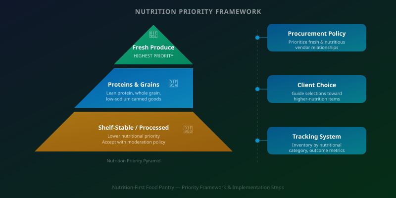

Filling a food box has always been the baseline. But filling it with food that actually supports the health of the people who receive it is a different — and higher — standard. More pantries are moving toward that standard deliberately, building what is increasingly called a nutrition-first model: one where procurement, sorting, distribution, and client communication are all organized around the nutritional quality of what flows through the organization.
This shift doesn't happen by accident, and it doesn't happen overnight. It requires intentional policy development, staff and volunteer training, changes to procurement and intake systems, and ongoing measurement. What follows is a practical framework for organizations that are ready to make this transition in a structured way.
Step One: Form a Nutrition Committee

A nutrition-first model requires a decision-making body with both subject matter expertise and organizational authority. A nutrition committee — typically comprising a registered dietitian or nutritionist, program staff, a procurement coordinator, and ideally a client representative — provides the structure for developing and maintaining a nutrition policy and adjudicating the tradeoffs that arise when ideal nutrition standards conflict with operational reality.
Not every organization will have immediate access to a registered dietitian on staff. Partnerships with community health organizations, local university nutrition programs, or healthcare system community benefit departments can provide the professional expertise needed to anchor the committee's work. What matters is that nutritional decision-making is informed by expertise rather than left to informal best-guesses.
Step Two: Develop a Written Nutrition Policy
A nutrition policy translates the organization's commitment to healthy food into specific, actionable standards. It should address which food categories are prioritized (fresh produce, lean proteins, whole grains, low-sodium canned goods), which are limited (high-sugar beverages, highly processed snacks, foods with excessive sodium or saturated fat), and how the organization handles donations that fall below its standards.
This last point is often the most operationally sensitive. Donor relationships are valuable, and turning away donations feels counterintuitive when the organization's mission is to address hunger. A clear policy — communicated proactively with donors — reduces the awkwardness of individual conversations and frames nutrition standards as a positive expression of organizational values rather than a rejection of generosity. Many donors, when given the opportunity, are enthusiastic about aligning their contributions with a higher standard.
Step Three: Update Procurement and Inventory Systems
Nutrition-first distribution requires procurement systems that reflect nutritional priorities. This means establishing preferred vendor relationships for fresh produce, whole grain products, and shelf-stable protein sources, and building nutritional classification into inventory management so that staff and volunteers can quickly identify and prioritize high-nutrition items.
Inventory systems should track food items by nutritional category — not just by weight, type, or expiration date — so that distribution can be deliberately balanced. When a client choice model is in operation, this classification allows staff to guide selections toward higher-nutrition options without limiting client autonomy. Technology platforms that support custom item tagging and category-based reporting make this significantly more manageable at scale.
Step Four: Train Staff and Volunteers
A nutrition policy is only as effective as the people implementing it. Staff and volunteers need to understand the rationale behind nutritional standards, know how to sort and prioritize inventory according to the policy, and be able to communicate with clients about what's available and why some items may be limited.
Training doesn't need to be elaborate. A clear, accessible nutrition guide — available both in print and digitally — that explains the policy, illustrates the food categories with examples, and provides simple talking points for client interactions is a strong foundation. Regular reinforcement through team meetings and brief refreshers during volunteer orientation keeps standards front of mind as personnel changes over time.
Step Five: Communicate with Clients and Donors
Client communication around nutrition policy should be framed around dignity and care, not restriction. The message is not "we're limiting what you can take" but "we're committed to providing you with the most healthful options we can." Multilingual materials, straightforward explanations of nutritional priorities, and opportunities for client feedback help ensure that the nutrition-first approach enhances rather than diminishes the client experience.
Donor communication is equally important. Updating solicitation materials, wish lists, and donation guidelines to reflect nutritional priorities ensures that incoming donations align with the organization's standards. Highlighting the impact of high-quality donations — "fresh produce donations directly fund our nutrition-first model" — creates positive reinforcement that can shift giving patterns over time.
Step Six: Measure and Report Outcomes
A nutrition-first model without measurement is a commitment without accountability. Organizations should track the proportion of distribution by nutritional category — the percentage of boxes containing fresh produce, lean protein, whole grains — and set improvement targets over time. Client health outcomes, where accessible through community health partnerships, provide the most compelling evidence of impact but require data-sharing arrangements that take time to develop.
Reporting nutritional outcomes to funders positions the organization as a leader in quality-focused food assistance rather than a simple distributor of calories. As funders increasingly prioritize health impact metrics alongside volume measures, organizations that can demonstrate nutritional quality in their programming will find themselves better positioned for competitive grants and healthcare sector partnerships.